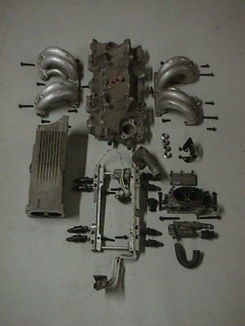

Now that Tuned Port Injection has been in service
for almost 15 years we have found that there are alot of TPI units that
are in need of rebuilding. Whether you are restoring your F-body or Corvette
or installing a TPI on a street rod, chances are your TPI unit is in need
of some mechanical/cosmetic restoration.
Our rebuilding service begins with a complete disassembly
of the unit. All parts are checked for date codes and labeled so as to
remain matched for re-assembly.
All of the aluminum pieces are chemically cleaned and inspected for
damage and wear. The base manifold, upper plenum, runners and throttle
body are then bead blasted and any threads that are damaged are repaired.
Minor scrapes and dents in the runners are removed.
The injectors are removed from the fuel rail
and are flow tested and ultra-sonically cleaned. Balanced sets are available
at additional cost. (Note: see fuel injector service page)
All sensors are tested and replaced as necessary.
The complete unit is then assembled with new gaskets and o-rings.
We stock a large inventory of TPI parts and use only OEM components
in the rebuilding process.
High performance base manifolds, high flow runners,
ported plenums, 52mm and 58mm throttle bodies, adjustable pressure regulators
and high flow injectors are also available. Rebuilding prices
start at $249 and will vary depending upon the extent of the rebuilding
necessary, replacement parts required and the condition of the TPI unit.
For more information and answers to any questions please e-mail rich@cruzinperformance.com.
|
Before rebuilding...
|
|
|
Disassembled
|
|  |
|
After rebuilding...
|
 |
Partial TPI Inventory
Return to main page